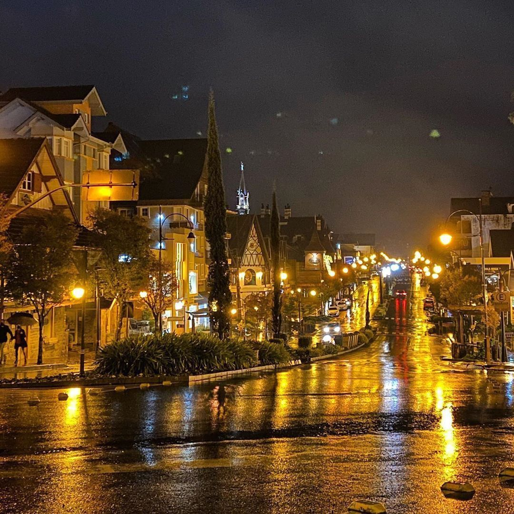

História da cidade: O município de Gramado foi criado pela Lei 2 522, de 15 de dezembro de 1954, após ser emancipado da cidade de Taquara. A região era habitada por índios caingangues e, posteriormente, foi colonizada por descendentes de açorianos, imigrantes alemães e italianos. Sua demografia é etnicamente variada, com forte influência alemã e italiana, o que se reflete especialmente na culinária e na arquitetura urbana e rural. Gramado também foi colonizado, em menor número, por portugueses, sírios e libaneses. Com uma economia voltada ao turismo, a cidade recebe anualmente milhões de turistas nacionais e estrangeiros.
Entre em contato para ter um tour inesquecivel: gramadotour@tours.com